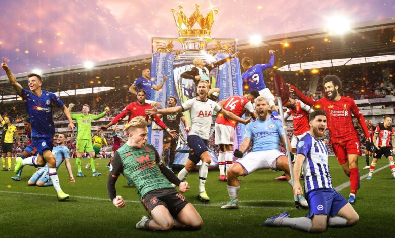
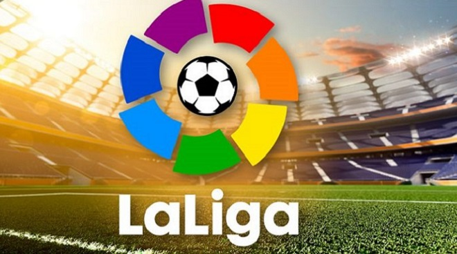
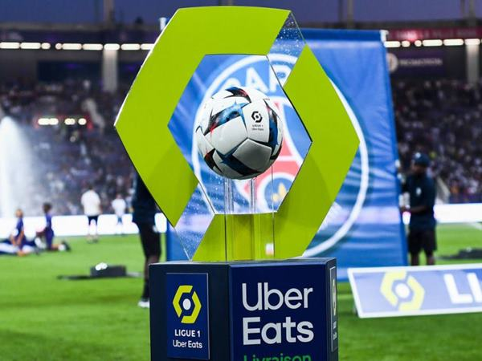
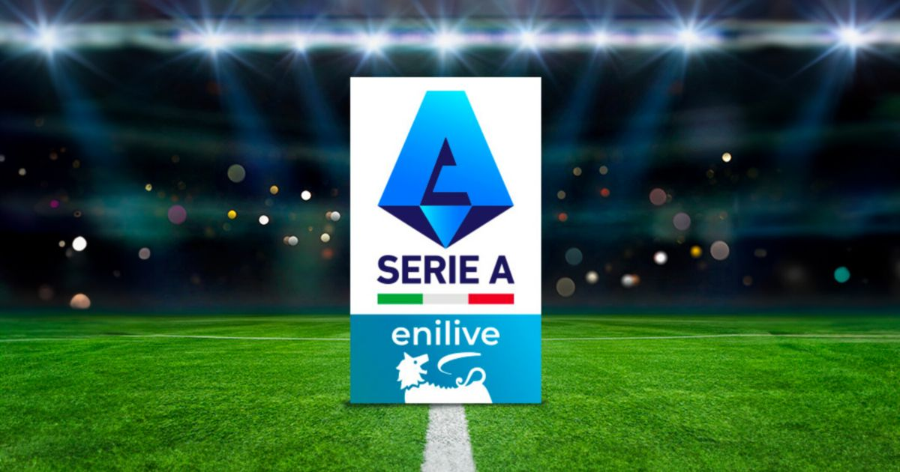
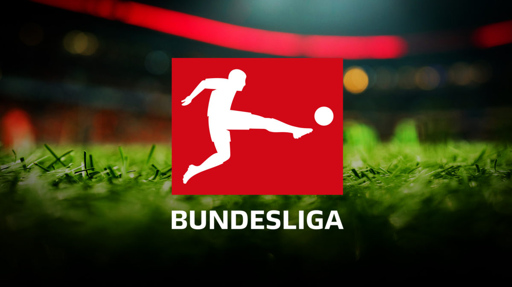
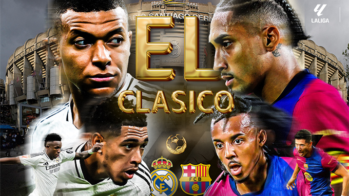

THỂ THAO
THÔNG TIN VỀ NGOẠI HẠNG ANH

Số đội tham gia: 20 đội.
Mùa giải: Mỗi mùa giải diễn ra từ tháng 8 đến tháng 5 của năm sau.
Hệ thống điểm: 3 điểm cho một trận thắng, 1 điểm cho một trận hòa, không điểm cho một trận thua.
Vị trí xuống hạng: Các đội xếp cuối cùng sẽ xuống thứ 2 giải Ngoại hạng Anh (EFL Championship).
Vị trí lên hạng: Các đội đứng đầu giải Ngoại hạng Anh (EFL Championship) sẽ lên thay thế.
Một số thông tin chính về La Liga

La Liga, hay còn gọi là La Liga Santander, là giải vô địch bóng đá hàng đầu tại Tây Ban Nha. Giải đấu này bao gồm 20 đội bóng, với Real Madrid và Barcelona thường xuyên cạnh tranh nhau để giành chức vô địch. Mùa giải 2023-2024 đang diễn ra với nhiều cú đúp hấp dẫn và những pha bóng tuyệt vời.
Thành lập: 1929.
Số đội tham gia: 20 đội.
Hệ thống điểm: 3 điểm cho một trận thắng, 1 điểm cho một trận hòa, không điểm cho một trận thua.
Vị trí xuống hạng: Các đội xếp cuối cùng sẽ xuống thứ 2 giải Segunda División.
Vị trí lên hạng: Các đội đứng đầu giải Segunda División sẽ lên thay thế.
Một số thông tin chính về Ligue 1

Giải vô địch quốc gia Pháp, được biết đến với tên gọi Ligue 1, là giải đấu bóng đá hàng đầu tại Pháp. Giải đấu này được tổ chức bởi Ligue de Football Professionnel (LFP) và bao gồm 20 đội bóng.
Thành lập: 1930.
Số đội tham gia: 20 đội.
Hệ thống điểm: 3 điểm cho một trận thắng, 1 điểm cho một trận hòa, không điểm cho một trận thua.
Vị trí xuống hạng: Các đội xếp cuối cùng sẽ xuống thứ 2 giải Ligue 2.
Vị trí lên hạng: Các đội đứng đầu giải Ligue 2 sẽ lên thay thế.
Ligue 1 nổi tiếng với sự cạnh tranh gay gắt và nhiều cầu thủ nổi tiếng từ khắp nơi trên thế giới. Paris Saint-Germain (PSG) hiện là đội bóng thành công nhất với 12 chức vô địch quốc gia1. Lyon là đội bóng có nhiều danh hiệu liên tiếp nhất với 7 chức vô địch liên tiếp từ năm 2002 đến 2008.
Bạn có đội yêu thích trong Ligue 1 không?
Một số thông tin chính về Serie A

Giải vô địch quốc gia Ý, được biết đến với tên gọi Serie A, là giải đấu bóng đá hàng đầu tại Ý. Serie A được tổ chức bởi Lega Serie A và bao gồm 20 đội bóng.
Thành lập: 1929.
Số đội tham gia: 20 đội.
Hệ thống điểm: 3 điểm cho một trận thắng, 1 điểm cho một trận hòa, không điểm cho một trận thua.
Vị trí xuống hạng: Các đội xếp cuối cùng sẽ xuống thứ 2 giải Serie B.
Vị trí lên hạng: CCác đội đứng đầu giải Serie B sẽ lên thay thế.
Serie A nổi tiếng với sự cạnh tranh gay gắt, các trận đấu hấp dẫn và nhiều cầu thủ nổi tiếng từ khắp nơi trên thế giới. Juventus là đội bóng thành công nhất với nhiều chức vô địch quốc gia, trong khi Inter và AC Milan cũng là các đội bóng nổi tiếng khác.
Một số thông tin chính về Bundesliga

Giải vô địch quốc gia Đức, được biết đến với tên gọi Bundesliga, là giải đấu bóng đá hàng đầu tại Đức. Bundesliga được tổ chức bởi Deutsche Fußball Liga (DFL) và bao gồm 18 đội bóng1.
Thành lập: 1963.
Số đội tham gia: 18 đội.
Hệ thống điểm: 3 điểm cho một trận thắng, 1 điểm cho một trận hòa, không điểm cho một trận thua.
Vị trí xuống hạng: Các đội xếp cuối cùng sẽ xuống thứ 2 giải 2. Bundesliga.
Vị trí lên hạng: Các đội đứng đầu giải 2. Bundesliga sẽ lên thay thế.
Bundesliga nổi tiếng với sự cạnh tranh gay gắt, các trận đấu hấp dẫn và nhiều cầu thủ nổi tiếng từ khắp nơi trên thế giới. Bayern Munich là đội bóng thành công nhất với 32 chức vô địch quốc gia, trong khi Borussia Dortmund, Hamburger SV, Werder Bremen, Borussia Mönchengladbach, và VfB Stuttgart cũng là các đội bóng nổi tiếng khác1.
THÔNG TIN VỀ EL LASICLASICO

El Clásico là tên gọi dành cho bất kỳ trận đấu nào giữa hai đội bóng nổi tiếng Tây Ban Nha là FC Barcelona và Real Madrid. Trận đấu này không chỉ là một sự kiện thể thao mà còn mang tính chất chính trị và văn hóa sâu sắc1.
Thành lập: Trận đấu đầu tiên diễn ra vào ngày 13 tháng 5 năm 1902.
Số trận gặp nhau: Tính đến ngày 26 tháng 10 năm 2024, hai đội đã gặp nhau 258 lần.
Địa điểm:Trận đấu thường diễn ra tại Camp Nou (sân nhà của Barcelona) và Santiago Bernabéu (sân nhà của Real Madrid).
Kết quả:Real Madrid dẫn đầu với 105 trận thắng, trong khi Barcelona có 101 trận thắng.
Cầu thủ ghi bàn nhiều nhất: Lionel Messi với 26 bàn thắng.
Kỷ lục: Trận thắng lớn nhất là Real Madrid 11-1 Barcelona vào năm 1943.
El Clásico không chỉ là một trận đấu bóng đá, mà còn là một biểu tượng của sự cạnh tranh gay gắt và sự đối đầu về chính trị giữa hai thành phố lớn nhất Tây Ban Nha: Madrid và Barcelona.